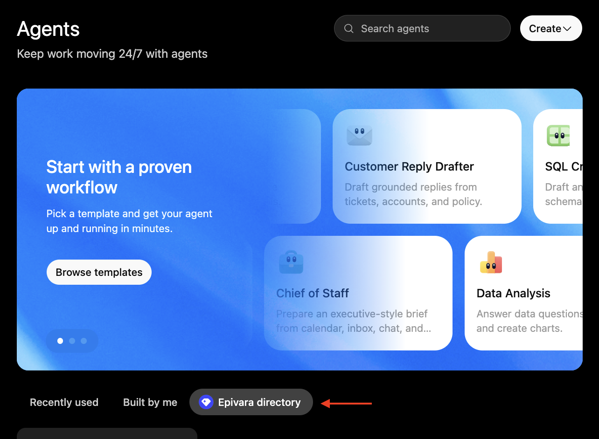

Agents
An agent is a reusable assistant that comes set up with context.
For ChatGPT to work well, you usually have to bring it up to speed: explain the background, attach the files it should reference, and lay out the rules you want it to follow. You have to share all this at the start of every new chat.
An agent saves that setup. It holds instructions, files, and the plugins and skills it's allowed to use, so all of it is loaded before you type your first message. No need to repeat yourself every time.
Creating an agent
Open the Agents page from the sidebar and press Create. Create an agent or start from a template.
If you're creating a new agent, you can describe what you want and let ChatGPT build the agent for you, or press Start blank in the top right to fill it in yourself.
At minimum, an agent needs a name and instructions to follow.
In your instructions, a list of things you might want to include are:
- Rules for the agent to follow
- Which skills and files to use
- Any helpful context to help guide the agent
- Anything else that answers the question: "What would I have to explain for ChatGPT to be useful for this agent's intended task?"
From there you can add:
- Apps — the plugins the agent can use.
- Skills — procedures you want it to know.
- Files — anything it should always have on hand.
You can also open the … menu and choose Settings to set the agent's default model and thinking level. See Intelligence for more info.
Using an agent
The easiest way is to type @ in a chat and pick the agent by name. You can also open the Agents page, select an agent, and start the conversation from the prompt box on its page.
At the moment, workspace agents are only accessible via Chat on the ChatGPT website. The desktop app has no access to workspace agents; if you'd like the custom agent experience on the app, see GPTs.
Sharing agents
On an agent's edit page, open the … menu and press Share. You can share the agent with specific people, or with everyone in the workspace.
Workspace-shared agents are usable by anyone in the workspace, and are accessible from the workspace directory on the Agents page.

Shared agents live in the workspace directory.
Why agents exist
Everything on this page so far, a custom GPT can do just as well. What sets an agent apart is that it doesn't need you in the room. Automation is the real point of agents.
For example, a salesperson might use an agent in the following way:
A new lead comes in overnight. An agent could pick it up on its own, research the company, and have a summary waiting for the salesperson by morning. Nobody needed to manually start a chat and tell the agent to act.
You can start setting up automated actions with agent automations, covered on the Scheduled Tasks page.
If you'd rather have an agent run on a trigger than on a schedule, additional setup outside of ChatGPT is required. Talk to your workspace admin if you have such a workflow in mind.